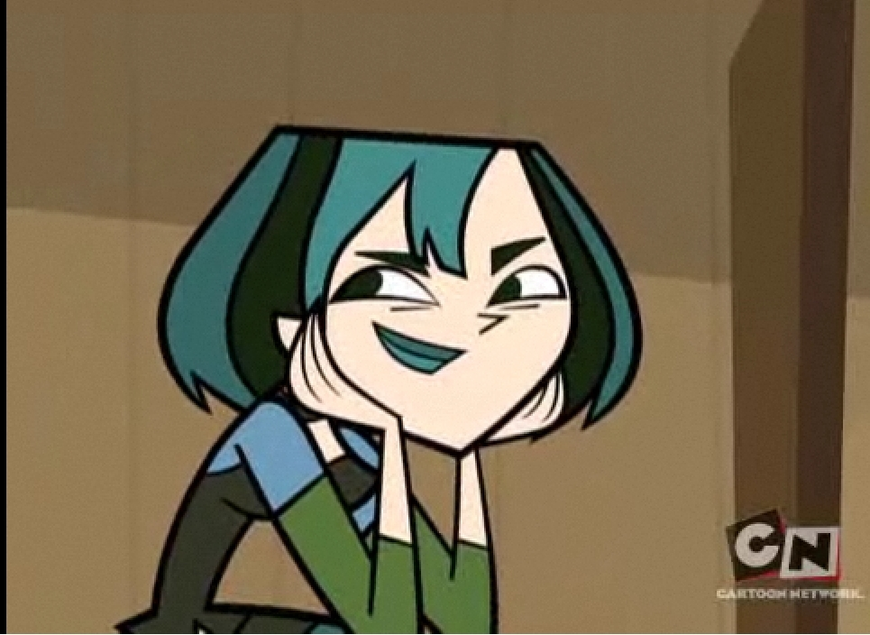

About Gwen
Gwen is a goth girl whose interests lie in art and astronomy. She is smart, independent, kind and level-headed, stating her best quality is her inability to get excited over minuscule things. Her attitude at first seems very harsh and sarcastic, but she is not a bitter person.
Gwen on the island.
characteristics:
- Her hair color is Black with Teal Streaks.
- She is claustrophobic.
- She is Labeled as The Loner on the island.
Friends:
Upon first arriving at the island, Gwen displays an antisocial attitude towards the others and prefers to be by herself. Eventually, she manages to open up and make friends with others.